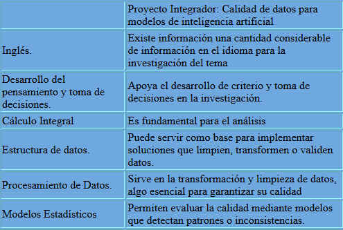
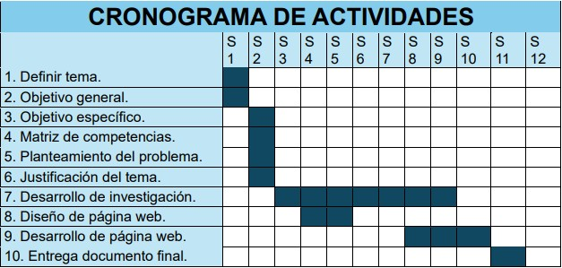
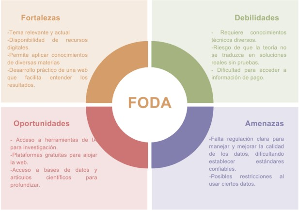

Índice
Matriz de Competencias
Objetivo General
Investigar y analizar técnicas para mejorar la calidad de los datos utilizados en modelos de inteligencia artificial mediante técnicas estadísticas y de procesamiento, con el fin de identificar y corregir errores que puedan afectar su funcionamiento, y mostrar los resultados en una página web para garantizar modelos confiables en sistemas inteligentes.
Objetivos Específicos
- 1. Identificar técnicas estadísticas y de procesamiento de datos aplicables para mejorar la calidad de datos en modelos de inteligencia artificial.
- 2. Analizar métodos para detectar y corregir errores e inconsistencias en conjuntos de datos utilizados en IA.
- 3. Investigar procesos de limpieza y transformación de datos.
- 4. Establecer métodos y criterios para medir la calidad de los datos y la efectividad de las técnicas aplicadas.
- 5. Buscar información para desarrollar una página web con el fin de mostrar la información obtenida.
- 6. Investigar metodologías y herramientas que permitan la supervisión y actualización de los datos para mantener la calidad a lo largo del tiempo.
Planteamiento del Problema
En la actualidad, la inteligencia artificial está cada vez más presente en nuestra vida diaria, desde recomendaciones personalizadas hasta sistemas de diagnósticos médicos. Sin embargo, para que estos modelos funcionen correctamente, necesitan datos de buena calidad. El problema es que muchas veces los datos que se usan están incompletos, contienen errores o no reflejan correctamente la realidad, lo que puede hacer que los resultados sean poco confiables o incorrectos.
Esto no solo afecta a los desarrolladores y científicos que crean estos modelos, sino también a las personas que dependen de ellos para tomar decisiones importantes. Por ello, es fundamental encontrar formas efectivas de limpiar y mejorar estos datos, asegurándonos de que sean precisos y coherentes. Además, es importante mostrar de manera clara y accesible cómo se ha mejorado la calidad de los datos para generar confianza en quienes usan estos sistemas inteligentes. Este proyecto busca precisamente eso: investigar y analizar técnicas que permitan mejorar la calidad de los datos y presentar los resultados de forma sencilla en una página web, lo que facilita la creación de modelos de inteligencia artificial más fiables y útiles para todos.
Justificación
Asegurar la calidad de los datos es un paso indispensable para que la inteligencia artificial cumpla su propósito de generar valor en sectores clave como salud, finanzas o educación. Implementar técnicas que mejoren los datos no solo aumenta la precisión y efectividad de los modelos, también reduce costos asociados a errores y retrabajos. Asimismo, presentar el resultado de estos procesos en una página web sencilla y accesible refuerza la transparencia, permite comprender los beneficios del trabajo realizado y fomenta la confianza entre los usuarios. Por todo ello, investigar, aplicar y comunicar buenas prácticas en la calidad de datos es una inversión que repercute positivamente tanto en el desempeño de los modelos como en quienes dependen de sus resultados.
Cronograma de Actividades
Metodología de Investigación
Se siguió una investigación de tipo cualitativo, documental y con un enfoque descriptivo. Se llevó a cabo una revisión de la literatura especializada, recurriendo a repositorios como RedALyC, Dialnet y el repositorio del CONACYT, además de consultar sitios web de empresas tecnológicas reconocidas en el ámbito de la inteligencia artificial.
Para la selección de las fuentes, se priorizó la actualidad (publicaciones entre 2020 y 2025), la relevancia temática y la solidez académica o técnica de los contenidos. La información relevante se extrajo mediante fichas de trabajo que permitieron identificar definiciones clave, técnicas estadísticas, herramientas de procesamiento y estrategias para garantizar la calidad de los datos. Finalmente, la información recopilada se analizó, sintetizó y organizó en capítulos que abordan tanto los fundamentos teóricos como las recomendaciones prácticas para la mejora de la calidad de datos en sistemas inteligentes.
Antecedentes
La inteligencia artificial (IA) está creciendo rápidamente y su uso es cada vez más común en áreas como la salud, la educación, el comercio y la industria. Para que estos sistemas sean efectivos es indispensable que los datos que utilizan sean de buena calidad, es decir, que sean precisos, completos, consistentes y actualizados. Sin embargo, es habitual que los conjuntos de datos contengan errores, inconsistencias o información faltante, por lo que antes de emplearlos es importante limpiarlos, organizarlos y validarlos.
Además, comprender las técnicas básicas de estadística para identificar valores atípicos, el manejo de estructuras de datos y ciertas habilidades de programación es fundamental para automatizar el preprocesamiento. Finalmente, comprender cómo los modelos de IA utilizan los datos y cómo los errores en estos pueden impactar sus resultados es clave para plantear estrategias que mejoren su calidad.
Recursos para el Desarrollo del Proyecto
Se usaron recursos como repositorios y buscadores académicos (RedALyC, Dialnet, CONACYT y Google Scholar), junto con material de trabajo básico (cuaderno, lapiceros, lápices, marcadores, post-its y tarjetas de trabajo) y una laptop para la organización y redacción del contenido. Además, fue necesario contar con acceso a internet o datos telefónicos para la búsqueda y descarga de artículos, así como para el desarrollo y publicación de la página web, que se implementará utilizando lenguajes como HTML, CSS y JavaScript.
FODA
Introducción
La inteligencia artificial ha adquirido un papel cada vez más relevante en la sociedad, impulsando avances en áreas tan diversas como la salud, la educación, el comercio y la industria. Sin embargo, la eficacia y confiabilidad de los modelos que la sustentan dependen directamente de la calidad de los datos que se utilizan en su desarrollo y operación. Datos incompletos, inconsistentes o desactualizados pueden producir resultados sesgados y decisiones erróneas, lo que limita el impacto positivo de estas tecnologías.
Garantizar que la información cumpla con criterios de precisión, completitud, coherencia y vigencia es, por tanto, una tarea prioritaria. Para lograrlo, resulta necesario comprender los métodos estadísticos y las técnicas de procesamiento que permiten identificar errores, limpiar los conjuntos de datos y transformarlos para que sean aptos para su uso en sistemas inteligentes. Además, es clave incorporar herramientas que automaticen la supervisión y validación de la calidad a lo largo del tiempo, promoviendo así entornos más robustos y confiables.
Desde esta perspectiva, comprender los principios que rigen la calidad de los datos, así como las estrategias para evaluarla y mantenerla, contribuye a que las soluciones basadas en inteligencia artificial sean más precisas, útiles y seguras para quienes las implementan y utilizan.
Contenido de la Investigación
Conclusiones
En esta investigación se ha comprobado que la calidad de los datos es un elemento clave para el correcto funcionamiento de los sistemas de inteligencia artificial. Técnicas como la limpieza, transformación, estandarización y validación de datos permiten detectar y corregir errores antes de que afecten los resultados, logrando que los modelos sean más confiables y útiles. Asimismo, se destacó la importancia del monitoreo continuo para mantener la calidad a lo largo del tiempo, especialmente cuando los datos provienen de diversas fuentes o cambian con frecuencia.
En conjunto, la aplicación de estos métodos facilita que los datos sean consistentes, completos y actualizados, evitando que errores o anomalías en la información afecten las decisiones que se toman a partir de los modelos. Los métodos analizados pueden implementarse fácilmente en entornos reales mediante herramientas y procesos sencillos que supervisen automáticamente la calidad de los datos. Por ejemplo, un sistema que revise registros en tiempo real detecte valores fuera de rango y envíe alertas cuando encuentre inconsistencias permitiría a las empresas actuar antes de que los errores generen problemas mayores.
En áreas como salud, educación o finanzas, este tipo de estrategias ayudaría a que los modelos sean más precisos, equitativos y confiables, además de reducir los costos y el tiempo invertido en corregir errores. Así, se refuerza la idea de que la calidad de los datos es la base para una inteligencia artificial que realmente sirva a las personas y a las organizaciones.
Referencias
- Bazán Gil, V. (2020). Inteligencia artificial y datos masivos en archivos digitales sonoros y bibliotecas. Universidad Nacional Autónoma de México.
- Carrillo, J. L. (2024). La Inteligencia Artificial necesita datos de calidad y seguros. Revista Jurídica, Región de Murcia, (54), 157-163.
- Surutusa, L. R. (2024). Inteligencia artificial y analítica de datos: impulsores de la calidad en la era digital. Calidad: Revista Mensual de la Asociación Española para la Calidad.
- Redalyc. (2024). Retos de la inteligencia artificial y sus posibles soluciones. Redalyc.org.
- Fernández, F. M. (2025). De la inteligencia artificial a la calidad de los datos: estrategias para una Europa competitiva. En Retos vitales para una nueva era (pp. 797-808). Dialnet.
- AWS. (s.f.). ¿En qué consiste la limpieza de datos? Amazon Web Services. https://aws.amazon.com/es/what-is/data-cleansing/
- DataScientest. (s.f.). Data cleaning: Limpieza de datos, definición, importancia. https://datascientest.com/es/datacleaning-limpieza-de-datos-definicion-tecnicas-importancia-en-data-science
- IBM. (2024, 29 de noviembre). ¿Qué es la limpieza de datos? IBM. https://www.ibm.com/mx-es/think/topics/data-cleaning
- OBS Business School. (2025, 4 de febrero). Técnicas de data cleaning para garantizar datos de calidad. https://www.obsbusiness.school/blog/tecnicas-de-data-cleaning-para-garantizar-datos-de-calidad
- CONACYT. (2021). Herramientas open source para la calidad de datos en big data. Repositorio CONACYT México. https://repositorio.conacyt.mx
- RedALyC. (2022). Automatización y monitoreo de calidad de datos con Great Expectations. https://www.redalyc.org
- CEPAL. (2023). Gestión de datos de investigación: Principios FAIR. Biblioguías CEPAL. https://biblioguias.cepal.org/c.php?g=495473&p=8022713
- Inesdi. (2025). Data Governance: el pilar estratégico para la analítica empresarial. https://www.inesdi.com/blog/data-governance-el-pilar-estrategico-para-la-analitica-empresarial-cp/
- Nicolao, R. G. (2023). ¿Cómo puedo comprobar si una gestión en ciberseguridad es adecuada? En búsqueda del método más efectivo [Tesis de maestría, Universidad de Buenos Aires]. Repositorio UBA. http://bibliotecadigital.econ.uba.ar/download/tpos/1502-2827_NicolaoR.pdf
- Redalyc. (2022). Principios FAIR de gestión de datos de investigación en ciencias de la salud. https://www.redalyc.org/journal/5517/551774102015/html/